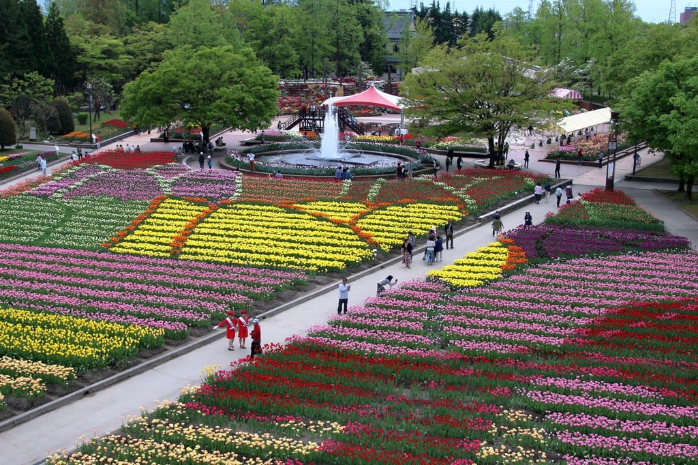

富山県のイベント
富山県にイベントを紹介します！
- ○おわら風の盆
- 富山市八尾地区で毎年9月1日から3日にかけて行われる行事です。
- 越中おわら節の哀切感に満ちた旋律にのって、踊り手たちが洗練された踊りを披露します。
- 艶やかで優雅な女踊り、勇壮な男踊り、哀調ある音色を奏でる胡弓の調べなどが訪問者を魅了します。
- ○となみチューリップフェア
- となみチューリップフェアは今年で70回目を迎えます。
- チューリップは富山の県花でもあり、300品種300万本のチューリップが色鮮やかに咲きそろいます。
- さまざまな絵柄の地上絵は必見です。

ぜひ富山の伝統や絶景をみに来てください！
ホームに戻る